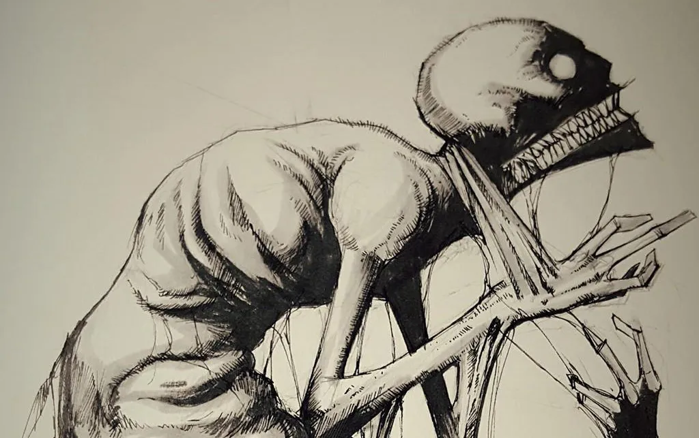

Cambio o alteración que se produce en la esencia o las características permanentes que conforman una cosa o en
el desarrollo normal de un proceso.
Ansiedad
La ansiedad puede presentarse en forma de miedo o preocupación, pero también puede hacer que
los niños estén irritables y enfadados. Los síntomas de la ansiedad también pueden incluir problemas para
dormir, además de síntomas físicos como fatiga, dolores de cabeza o dolores de estómago. Algunos niños
ansiosos no comunican sus preocupaciones y, por lo tanto, los síntomas pueden pasar desapercibidos.

Depresión
La depresión extrema puede hacer que el niño piense en el suicidio o planee suicidarse. En los
jóvenes de 10 a 24 años, el suicidio es la principal causa de muerte.
Trastorno de oposición desafiante
Cuando los niños se portan mal en forma persistente, de tal manera que causan serios problemas
en la casa, la escuela o con los compañeros, puede que reciban el diagnóstico de trastorno de oposición
desafiante (TOD). El trastorno de oposición desafiante generalmente comienza antes de los 8 años de edad,
pero no después de los 12 años. Los niños con trastorno de oposición desafiante tienen más probabilidades de
presentar una actitud desafiante o de oposición con las personas más conocidas, como los miembros de la
familia, las personas que los cuidan habitualmente o los maestros. Los niños con trastorno de oposición
desafiante muestran esos comportamientos más a menudo que otros niños de la misma edad.
Trastorno de la conducta
El trastorno de la conducta (TC) se diagnostica cuando el niño muestra un patrón continuo de
agresión hacia otras personas, y graves violaciones de las reglas y normas sociales en la casa, la escuela y
con los compañeros. Estas violaciones de las reglas pueden implicar quebrantar la ley y, como consecuencia,
ser arrestado. Los niños con trastorno de la conducta tienen más probabilidades de lesionarse y quizás
tengan dificultades para llevarse bien con los compañeros.
Trastorno por déficit de atención e hiperactividad (TDAH)
Las personas con el TDAH pueden tener problemas para prestar atención, controlar conductas
impulsivas (podrían actuar sin pensar en el resultado de sus acciones) o pueden ser demasiado activos.
Aunque el TDAH no tiene cura, se puede controlar eficazmente y algunos síntomas pueden mejorar a medida que
el niño va creciendo.
Síndrome de Gilles de la Tourette
El síndrome de Tourette (TS, por sus siglas en inglés) causa que las personas tengan “tics”,
los cuales son espasmos, movimientos o sonidos frecuentes y repentinos. Las personas que tienen tics no
pueden controlarlos voluntariamente.
Trastorno obsesivo-compulsivo
Muchos niños, a veces, tienen pensamientos que les molestan, y puede que sientan que tienen
que hacer algo acerca de esos pensamientos, aunque sus acciones no tengan sentido. Por ejemplo, puede que
les preocupe tener mala suerte si no se ponen su prenda de vestir favorita. En algunos niños, los
pensamientos y ansias de hacer ciertas acciones persisten, aunque traten de ignorarlos o hacerlos
desaparecer. Puede que los niños tengan un trastorno obsesivo-compulsivo (TOC) cuando los pensamientos no
deseados, y los comportamientos que se sienten obligados a hacer debido a esos pensamientos, suceden con
frecuencia, ocupan mucho tiempo (más de una hora al día), interfieren con sus actividades o los hacen
sentirse muy mal. A los pensamientos se les llama obsesiones. A los comportamientos se les llama
compulsiones.
Trastorno por estrés postraumático
Puede que todos los niños pasen por situaciones muy estresantes que afecten la manera en que
piensan y sienten. La mayoría de las veces, los niños se recuperan bien y con rapidez. Sin embargo, a veces,
los niños que pasan por una situación de estrés intenso —como en casos de lesiones, muerte o posible muerte
de un familiar o amigo cercano, o violencia— se verán afectados a largo plazo. El niño podría sufrir este
trauma en forma directa o podría ser testigo de algo que le suceda a otra persona. Cuando el niño presenta
síntomas a largo plazo (que duran más de un mes) a causa de ese estrés, que lo hacen sentirse mal o
interfieren con sus relaciones y actividades, puede que reciba el diagnóstico de trastorno por estrés
postraumático (TEPT).